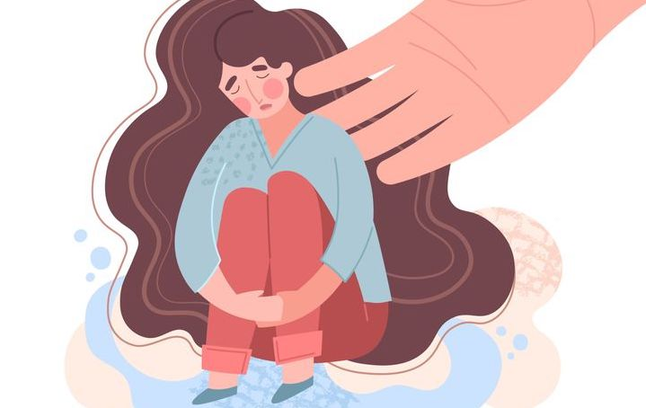
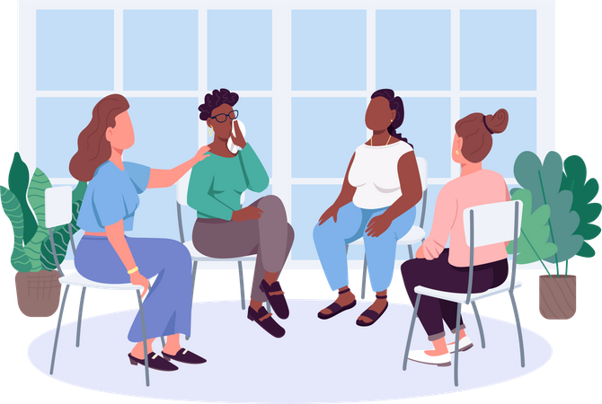

Estamos aquí para ti. No estás solo.
Todos pasamos por momentos de duda o dificultad. Buscar ayuda no es una señal de debilidad, sino de fortaleza. Existen profesionales capacitados que pueden orientarte de forma confidencial y sin juzgarte.
No importa cuál sea tu situación, siempre hay opciones y personas dispuestas a escucharte. Lo más importante es no quedarse solo con las dudas o el miedo.
Si crees que puedes estar embarazada y no sabes qué hacer.
Si has vivido una situación de abuso, violencia o acoso.
Si necesitas información sobre anticonceptivos, ETS o salud en general.
Si te sientes triste, ansioso o necesitas hablar con alguien.

No tienes que enfrentar las dificultades solo. Buscar ayuda a tiempo puede marcar una gran diferencia en cómo te sientes y en las soluciones que encuentres.
Recuerda: pedir ayuda es el primer paso para resolver cualquier situación.
Acude a tu centro de salud más cercano. Ofrecen orientación gratuita y confidencial.
En Ecuador, llama al 911 para emergencias. También existen líneas de ayuda psicológica.
Médicos, psicólogos y trabajadores sociales pueden orientarte de forma profesional.
Busca grupos donde puedas compartir experiencias con otras personas.

Recuerda: pedir ayuda es el primer paso para resolver cualquier situación.